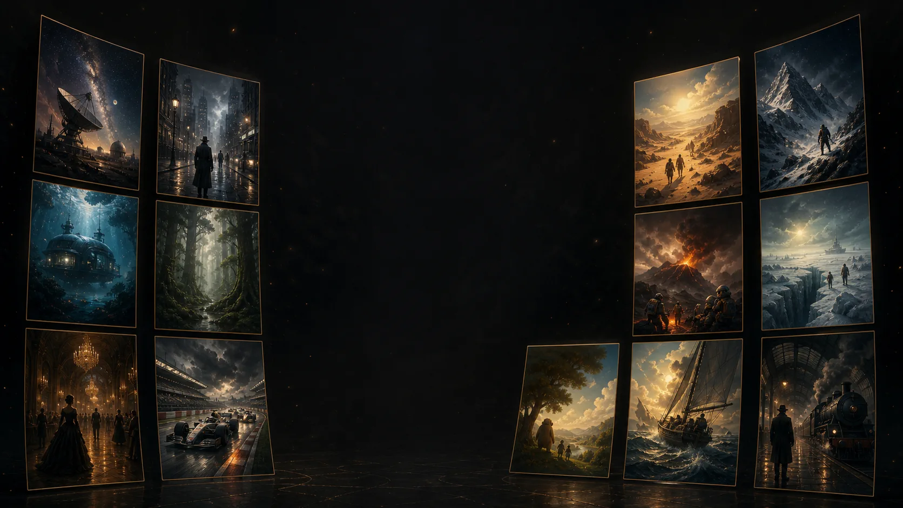
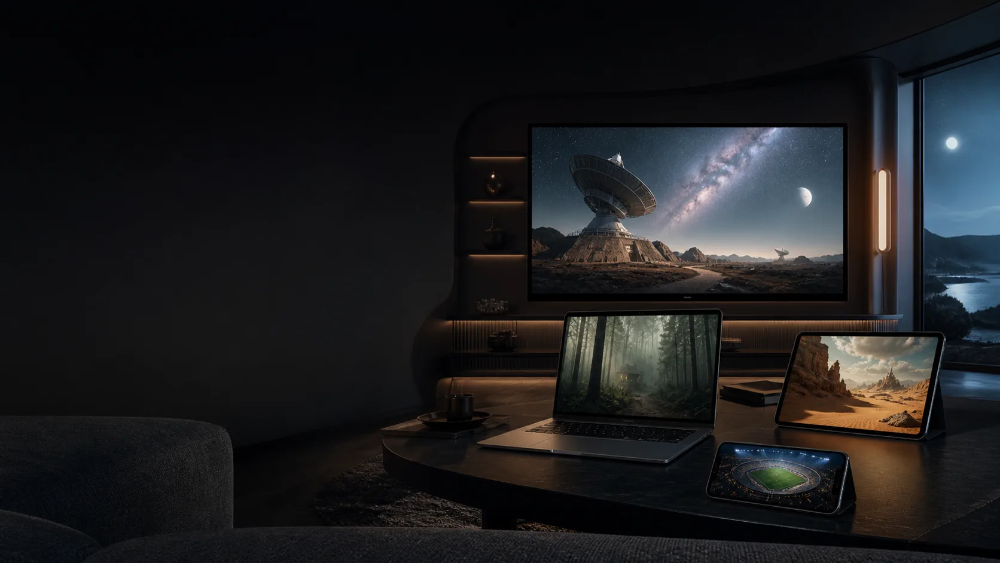

PLAYER PREMIUM · SUA FONTE, SUA BIBLIOTECA
Tudo o que você assiste.
Finalmente no lugar certo.
Organize TV ao vivo, filmes e séries das fontes autorizadas que você já possui — numa experiência rápida, privada e cinematográfica.
7 dias grátis
2 anos por pagamento
0 conteúdo fornecido
Feito para as fontes que você já usa
- M3U / M3U8
- Xtream-compatible
- Stalker / Ministra
- Credenciais protegidas
DEMONSTRAÇÃO INTERATIVA
Cinco telas. Uma biblioteca.
Escolha uma função ou deixe a apresentação avançar sozinha. É assim que o IPTV BURO organiza uma fonte real depois da importação.
CONTINUE ASSISTINDO
No limite do horizonte
Retome exatamente do ponto onde parou, dentro do perfil certo.
▶ Assistir＋ Detalhes
BURO NOCTURNE
Uma interface que desacelera o ruído.
Movimento suave, foco claro e espaço para o que importa. No sofá, no computador ou numa tela menor.
- Foco visível para controle remoto, teclado e mouse
- Layouts adaptativos para TV, desktop e mobile
- Português, inglês, alemão e italiano
Experiência visual IPTV BURO
FUNÇÕES REAIS
Menos configuração.
Mais descoberta.
O IPTV BURO não é uma lista de canais com outra pintura. Ele transforma a sua fonte numa biblioteca navegável e separa cada experiência com clareza.

01
ORGANIZAÇÃO EDITORIAL
A lista vira biblioteca.
Capas, categorias, busca, detalhes, elenco, favoritos e continuidade — sem misturar TV ao vivo com filmes e séries.
HomeBuscaFavoritosContinuar assistindo
TV ao vivo com contexto
Agora e a seguir, troca rápida de canal e Multiview de até quatro canais no Windows.
Perfis e Kids
Até cinco perfis, favoritos separados e proteção conservadora para conteúdo adulto.
Continuidade real
Pare num episódio ou filme e retome do ponto certo no mesmo perfil.
Privado por desenho
Credenciais protegidas pelo sistema e URLs autenticadas resolvidas apenas em memória.
Sua fonte, sem prisão
M3U/M3U8, Xtream-compatible e fundação Stalker/Ministra numa única experiência.
Evolui com você
Atualizações verificadas, quatro idiomas e uma arquitetura preparada para novas plataformas.

UMA LINGUAGEM, VÁRIAS TELAS
A mesma calma,
onde você estiver.
A experiência adapta navegação, densidade e controles sem perder a identidade do produto.
PLATAFORMAS
Comece onde já funciona.
As versões atuais são prévias. Novas plataformas só aparecem como disponíveis depois de validação real.
Windows 10/11
Player integrado, catálogo completo, Multiview e atualizações verificadas.
Android / Android TV
Aplicativo adaptativo com Media3, perfis, catálogo e reprodução.
Outras plataformas
Fire TV, Apple, Samsung, LG e mais fazem parte do roteiro, não da promessa atual.
ATIVAÇÃO SEGURA
Teste primeiro.
Pague uma vez.
Sem assinatura automática. O código liga o pagamento apenas à instalação mostrada no aplicativo.
- 7 dias grátis, sem cartão
- Pagamento processado pela Stripe
- Não guardamos dados do cartão
Licença por dispositivoPAGAMENTO ÚNICO
€9,90/2 anos
O valor final e a moeda são confirmados antes do pagamento.
ou
Já tem uma chave de ativação?Use a chave sem pagar novamente.→
Conexão segura. A ativação só acontece depois do webhook confirmado pelo servidor.
DO APP À ATIVAÇÃO
Quatro passos. Alguns segundos.
- 01
Abra o IPTV BURO
O teste começa na primeira abertura e o aplicativo cria um código privado para a instalação.
- 02
Leia o QR code
A página já abre com o dispositivo preenchido. Também é possível copiar o código.
- 03
Confirme na Stripe
Preço, moeda e período são validados pelo servidor, não pelo navegador.
- 04
Volte ao aplicativo
A compra é reconhecida automaticamente após a confirmação segura.
SEM LETRAS PEQUENAS
Perguntas importantes.
O IPTV BURO fornece canais ou filmes?
Não. O IPTV BURO é um player e organizador. Você adiciona apenas fontes de mídia que possui autorização para usar.
A licença é vitalícia?
Não. O pagamento libera um dispositivo por 730 dias. Isso financia manutenção contínua para mudanças de formatos, provedores e sistemas.
Posso usar em vários dispositivos?
Cada pagamento ativa uma instalação. Perfis são pessoas dentro do mesmo aparelho; não multiplicam a licença.
O site recebe minha lista IPTV?
Não. O portal de pagamento recebe apenas o código público da instalação. A sua lista e as credenciais ficam no aplicativo.
O que acontece num reembolso?
Um reembolso integral confirmado revoga a licença ligada à compra. Reembolsos e disputas são processados pelo servidor de forma auditável.